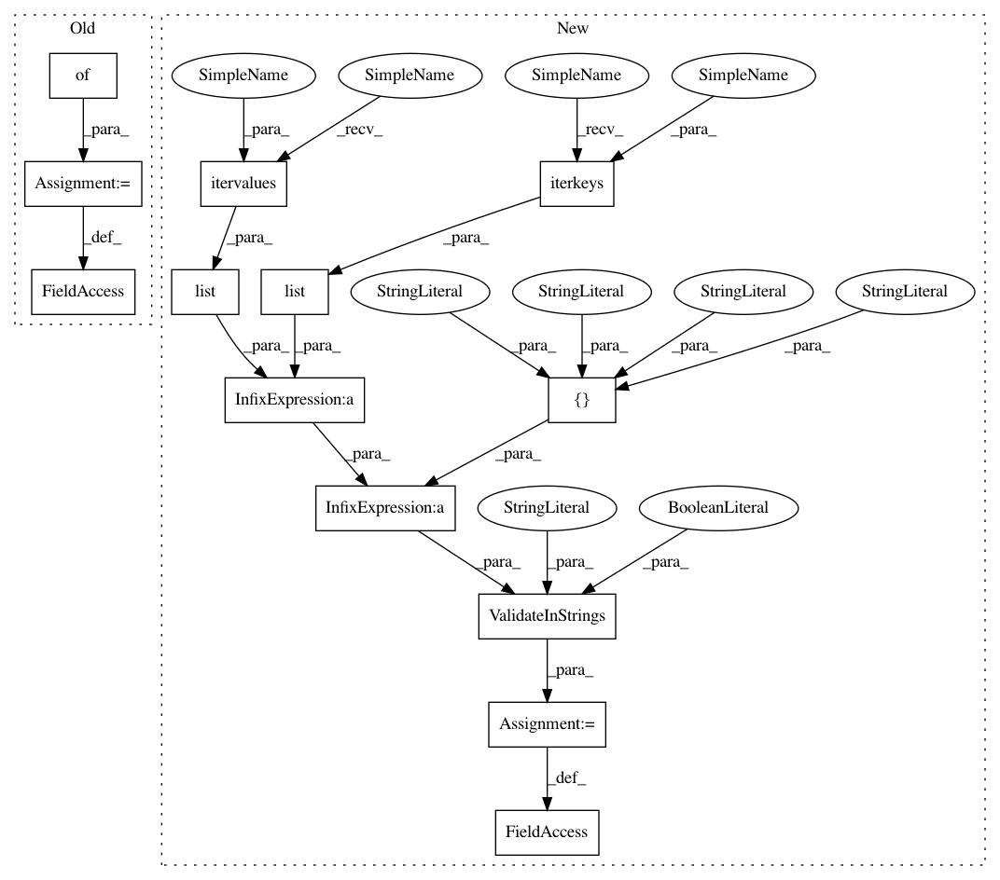

3bee9363d002f9d9bdca93746d5048219e7e4f1d,lib/matplotlib/rcsetup.py,,,#,923
Before Change
// a map from key -> value, converter
defaultParams = {
"backend": ["Agg", validate_backend], // agg is certainly
// present
"backend_fallback": [True, validate_bool], // agg is certainly present
"backend.qt4": [None, validate_qt4],
"backend.qt5": [None, validate_qt5],
"webagg.port": [8988, validate_int],
"webagg.address": ["127.0.0.1", validate_webagg_address],
"webagg.open_in_browser": [True, validate_bool],
"webagg.port_retries": [50, validate_int],
"nbagg.transparent": [True, validate_bool],
"toolbar": ["toolbar2", validate_toolbar],
"datapath": [None, validate_path_exists], // handled by
// _get_data_path_cached
"interactive": [False, validate_bool],
"timezone": ["UTC", validate_string],
// the verbosity setting
"verbose.level": ["silent", validate_verbose],
"verbose.fileo": ["sys.stdout", validate_string],
// line props
"lines.linewidth": [1.5, validate_float], // line width in points
"lines.linestyle": ["-", _validate_linestyle], // solid line
"lines.color": ["C0", validate_color], // first color in color cycle
"lines.marker": ["None", validate_string], // marker name
"lines.markeredgewidth": [1.0, validate_float],
"lines.markersize": [6, validate_float], // markersize, in points
"lines.antialiased": [True, validate_bool], // antialiased (no jaggies)
"lines.dash_joinstyle": ["round", validate_joinstyle],
"lines.solid_joinstyle": ["round", validate_joinstyle],
"lines.dash_capstyle": ["butt", validate_capstyle],
"lines.solid_capstyle": ["projecting", validate_capstyle],
"lines.dashed_pattern": [[3.7, 1.6], validate_nseq_float(allow_none=True)],
"lines.dashdot_pattern": [[6.4, 1.6, 1, 1.6],
validate_nseq_float(allow_none=True)],
"lines.dotted_pattern": [[1, 1.65], validate_nseq_float(allow_none=True)],
"lines.scale_dashes": [True, validate_bool],
// marker props
"markers.fillstyle": ["full", validate_fillstyle],
//// patch props
"patch.linewidth": [1.0, validate_float], // line width in points
"patch.edgecolor": ["k", validate_color],
"patch.force_edgecolor" : [False, validate_bool],
"patch.facecolor": ["C0", validate_color], // first color in cycle
"patch.antialiased": [True, validate_bool], // antialiased (no jaggies)
//// hatch props
"hatch.color": ["k", validate_color],
"hatch.linewidth": [1.0, validate_float],
//// Histogram properties
"hist.bins": [10, validate_hist_bins],
//// Boxplot properties
"boxplot.notch": [False, validate_bool],
"boxplot.vertical": [True, validate_bool],
"boxplot.whiskers": [1.5, validate_whiskers],
"boxplot.bootstrap": [None, validate_int_or_None],
"boxplot.patchartist": [False, validate_bool],
"boxplot.showmeans": [False, validate_bool],
"boxplot.showcaps": [True, validate_bool],
"boxplot.showbox": [True, validate_bool],
"boxplot.showfliers": [True, validate_bool],
"boxplot.meanline": [False, validate_bool],
"boxplot.flierprops.color": ["k", validate_color],
"boxplot.flierprops.marker": ["o", validate_string],
"boxplot.flierprops.markerfacecolor": ["none", validate_color_or_auto],
"boxplot.flierprops.markeredgecolor": ["k", validate_color],
"boxplot.flierprops.markersize": [6, validate_float],
"boxplot.flierprops.linestyle": ["none", _validate_linestyle],
"boxplot.flierprops.linewidth": [1.0, validate_float],
"boxplot.boxprops.color": ["k", validate_color],
"boxplot.boxprops.linewidth": [1.0, validate_float],
"boxplot.boxprops.linestyle": ["-", _validate_linestyle],
"boxplot.whiskerprops.color": ["k", validate_color],
"boxplot.whiskerprops.linewidth": [1.0, validate_float],
"boxplot.whiskerprops.linestyle": ["-", _validate_linestyle],
"boxplot.capprops.color": ["k", validate_color],
"boxplot.capprops.linewidth": [1.0, validate_float],
"boxplot.capprops.linestyle": ["-", _validate_linestyle],
"boxplot.medianprops.color": ["C1", validate_color],
"boxplot.medianprops.linewidth": [1.0, validate_float],
"boxplot.medianprops.linestyle": ["-", _validate_linestyle],
"boxplot.meanprops.color": ["C2", validate_color],
"boxplot.meanprops.marker": ["^", validate_string],
"boxplot.meanprops.markerfacecolor": ["C2", validate_color],
"boxplot.meanprops.markeredgecolor": ["C2", validate_color],
"boxplot.meanprops.markersize": [6, validate_float],
"boxplot.meanprops.linestyle": ["--", _validate_linestyle],
"boxplot.meanprops.linewidth": [1.0, validate_float],
//// font props
"font.family": [["sans-serif"], validate_stringlist], // used by text object
"font.style": ["normal", validate_string],
"font.variant": ["normal", validate_string],
"font.stretch": ["normal", validate_string],
"font.weight": ["normal", validate_string],
"font.size": [10, validate_float], // Base font size in points
"font.serif": [["DejaVu Serif", "Bitstream Vera Serif",
"Computer Modern Roman",
"New Century Schoolbook", "Century Schoolbook L",
"Utopia", "ITC Bookman", "Bookman",
"Nimbus Roman No9 L", "Times New Roman",
"Times", "Palatino", "Charter", "serif"],
validate_stringlist],
"font.sans-serif": [["DejaVu Sans", "Bitstream Vera Sans",
"Computer Modern Sans Serif",
"Lucida Grande", "Verdana", "Geneva", "Lucid",
"Arial", "Helvetica", "Avant Garde", "sans-serif"],
validate_stringlist],
"font.cursive": [["Apple Chancery", "Textile", "Zapf Chancery",
"Sand", "Script MT", "Felipa", "cursive"],
validate_stringlist],
"font.fantasy": [["Comic Sans MS", "Chicago", "Charcoal", "Impact"
"Western", "Humor Sans", "xkcd", "fantasy"],
validate_stringlist],
"font.monospace": [["DejaVu Sans Mono", "Bitstream Vera Sans Mono",
"Computer Modern Typewriter",
"Andale Mono", "Nimbus Mono L", "Courier New",
"Courier", "Fixed", "Terminal", "monospace"],
validate_stringlist],
// text props
"text.color": ["k", validate_color], // black
"text.usetex": [False, validate_bool],
"text.latex.unicode": [False, validate_bool],
"text.latex.preamble": [[""], validate_stringlist],
"text.latex.preview": [False, validate_bool],
"text.dvipnghack": [None, validate_bool_maybe_none],
"text.hinting": ["auto", validate_hinting],
"text.hinting_factor": [8, validate_int],
"text.antialiased": [True, validate_bool],
"mathtext.cal": ["cursive", validate_font_properties],
"mathtext.rm": ["sans", validate_font_properties],
"mathtext.tt": ["monospace", validate_font_properties],
"mathtext.it": ["sans:italic", validate_font_properties],
"mathtext.bf": ["sans:bold", validate_font_properties],
"mathtext.sf": ["sans", validate_font_properties],
"mathtext.fontset": ["dejavusans", validate_fontset],
"mathtext.default": ["it", validate_mathtext_default],
"mathtext.fallback_to_cm": [True, validate_bool],
"image.aspect": ["equal", validate_aspect], // equal, auto, a number
"image.interpolation": ["nearest", validate_string],
"image.cmap": ["viridis", validate_string], // one of gray, jet, etc
"image.lut": [256, validate_int], // lookup table
"image.origin": ["upper", validate_string], // lookup table
"image.resample": [True, validate_bool],
// Specify whether vector graphics backends will combine all images on a
// set of axes into a single composite image
"image.composite_image": [True, validate_bool],
// contour props
"contour.negative_linestyle": ["dashed", _validate_linestyle],
"contour.corner_mask": [True, validate_bool],
// errorbar props
"errorbar.capsize": [0, validate_float],
// axes props
"axes.axisbelow": ["line", validate_axisbelow],
"axes.hold": [None, deprecate_axes_hold],
"axes.facecolor": ["w", validate_color], // background color; white
"axes.edgecolor": ["k", validate_color], // edge color; black
"axes.linewidth": [0.8, validate_float], // edge linewidth
"axes.spines.left": [True, validate_bool], // Set visibility of axes
"axes.spines.right": [True, validate_bool], // "spines", the lines
"axes.spines.bottom": [True, validate_bool], // around the chart
"axes.spines.top": [True, validate_bool], // denoting data boundary
"axes.titlesize": ["large", validate_fontsize], // fontsize of the
// axes title
"axes.titleweight": ["normal", validate_string], // font weight of axes title
"axes.titlepad": [6.0, validate_float], // pad from axes top to title in points
"axes.grid": [False, validate_bool], // display grid or not
"axes.grid.which": ["major", validate_axis_locator], // set whether the gid are by
// default draw on "major"
// "minor" or "both" kind of
// axis locator
"axes.grid.axis": ["both", validate_grid_axis], // grid type.
// Can be "x", "y", "both"
"axes.labelsize": ["medium", validate_fontsize], // fontsize of the
// x any y labels
"axes.labelpad": [4.0, validate_float], // space between label and axis
"axes.labelweight": ["normal", validate_string], // fontsize of the x any y labels
"axes.labelcolor": ["k", validate_color], // color of axis label
"axes.formatter.limits": [[-7, 7], validate_nseq_int(2)],
// use scientific notation if log10
// of the axis range is smaller than the
// first or larger than the second
"axes.formatter.use_locale": [False, validate_bool],
// Use the current locale to format ticks
"axes.formatter.use_mathtext": [False, validate_bool],
"axes.formatter.min_exponent": [0, validate_int], // minimum exponent to format in scientific notation
"axes.formatter.useoffset": [True, validate_bool],
"axes.formatter.offset_threshold": [4, validate_int],
"axes.unicode_minus": [True, validate_bool],
// This entry can be either a cycler object or a
// string repr of a cycler-object, which gets eval()"ed
// to create the object.
"axes.prop_cycle": [
ccycler("color",
["/Ǘf77b4", "//ff7f0e", "/ǘca02c", "//d62728",
"/bd", "/Ǟc564b", "//e377c2", "/ǝf7f7f",
"//bcbd22", "/ቭbecf"]),
validate_cycler],
// If "data", axes limits are set close to the data.
// If "round_numbers" axes limits are set to the nearest round numbers.
"axes.autolimit_mode": [
"data",
ValidateInStrings("autolimit_mode", ["data", "round_numbers"])],
"axes.xmargin": [0.05, ValidateInterval(0, 1,
closedmin=True,
closedmax=True)], // margin added to xaxis
"axes.ymargin": [0.05, ValidateInterval(0, 1,
closedmin=True,
closedmax=True)],// margin added to yaxis
"polaraxes.grid": [True, validate_bool], // display polar grid or
// not
"axes3d.grid": [True, validate_bool], // display 3d grid
// scatter props
"scatter.marker": ["o", validate_string],
// TODO validate that these are valid datetime format strings
"date.autoformatter.year": ["%Y", validate_string],
"date.autoformatter.month": ["%Y-%m", validate_string],
"date.autoformatter.day": ["%Y-%m-%d", validate_string],
"date.autoformatter.hour": ["%m-%d %H", validate_string],
"date.autoformatter.minute": ["%d %H:%M", validate_string],
"date.autoformatter.second": ["%H:%M:%S", validate_string],
"date.autoformatter.microsecond": ["%M:%S.%f", validate_string],
//legend properties
"legend.fancybox": [True, validate_bool],
"legend.loc": ["best", validate_legend_loc],
// the number of points in the legend line
"legend.numpoints": [1, validate_int],
// the number of points in the legend line for scatter
"legend.scatterpoints": [1, validate_int],
"legend.fontsize": ["medium", validate_fontsize],
// the relative size of legend markers vs. original
"legend.markerscale": [1.0, validate_float],
"legend.shadow": [False, validate_bool],
// whether or not to draw a frame around legend
"legend.frameon": [True, validate_bool],
// alpha value of the legend frame
"legend.framealpha": [0.8, validate_float_or_None],
//// the following dimensions are in fraction of the font size
"legend.borderpad": [0.4, validate_float], // units are fontsize
// the vertical space between the legend entries
"legend.labelspacing": [0.5, validate_float],
// the length of the legend lines
"legend.handlelength": [2., validate_float],
// the length of the legend lines
"legend.handleheight": [0.7, validate_float],
// the space between the legend line and legend text
"legend.handletextpad": [.8, validate_float],
// the border between the axes and legend edge
"legend.borderaxespad": [0.5, validate_float],
// the border between the axes and legend edge
"legend.columnspacing": [2., validate_float],
"legend.facecolor": ["inherit", validate_color_or_inherit],
"legend.edgecolor": ["0.8", validate_color_or_inherit],
// tick properties
"xtick.top": [False, validate_bool], // draw ticks on the top side
"xtick.bottom": [True, validate_bool], // draw ticks on the bottom side
"xtick.labeltop": [False, validate_bool], // draw label on the top
"xtick.labelbottom": [True, validate_bool], // draw label on the bottom
"xtick.major.size": [3.5, validate_float], // major xtick size in points
"xtick.minor.size": [2, validate_float], // minor xtick size in points
"xtick.major.width": [0.8, validate_float], // major xtick width in points
"xtick.minor.width": [0.6, validate_float], // minor xtick width in points
"xtick.major.pad": [3.5, validate_float], // distance to label in points
"xtick.minor.pad": [3.4, validate_float], // distance to label in points
"xtick.color": ["k", validate_color], // color of the xtick labels
"xtick.minor.visible": [False, validate_bool], // visibility of the x axis minor ticks
"xtick.minor.top": [True, validate_bool], // draw x axis top minor ticks
"xtick.minor.bottom": [True, validate_bool], // draw x axis bottom minor ticks
"xtick.major.top": [True, validate_bool], // draw x axis top major ticks
"xtick.major.bottom": [True, validate_bool], // draw x axis bottom major ticks
// fontsize of the xtick labels
"xtick.labelsize": ["medium", validate_fontsize],
"xtick.direction": ["out", validate_string], // direction of xticks
"xtick.alignment": ["center", _validate_alignment],
"ytick.left": [True, validate_bool], // draw ticks on the left side
"ytick.right": [False, validate_bool], // draw ticks on the right side
"ytick.labelleft": [True, validate_bool], // draw tick labels on the left side
"ytick.labelright": [False, validate_bool], // draw tick labels on the right side
"ytick.major.size": [3.5, validate_float], // major ytick size in points
"ytick.minor.size": [2, validate_float], // minor ytick size in points
"ytick.major.width": [0.8, validate_float], // major ytick width in points
"ytick.minor.width": [0.6, validate_float], // minor ytick width in points
"ytick.major.pad": [3.5, validate_float], // distance to label in points
"ytick.minor.pad": [3.4, validate_float], // distance to label in points
"ytick.color": ["k", validate_color], // color of the ytick labels
"ytick.minor.visible": [False, validate_bool], // visibility of the y axis minor ticks
"ytick.minor.left": [True, validate_bool], // draw y axis left minor ticks
"ytick.minor.right": [True, validate_bool], // draw y axis right minor ticks
"ytick.major.left": [True, validate_bool], // draw y axis left major ticks
"ytick.major.right": [True, validate_bool], // draw y axis right major ticks
// fontsize of the ytick labels
"ytick.labelsize": ["medium", validate_fontsize],
"ytick.direction": ["out", validate_string], // direction of yticks
"ytick.alignment": ["center_baseline", _validate_alignment],
"grid.color": ["//b0b0b0", validate_color], // grid color
"grid.linestyle": ["-", _validate_linestyle], // solid
"grid.linewidth": [0.8, validate_float], // in points
"grid.alpha": [1.0, validate_float],
//// figure props
// figure title
"figure.titlesize": ["large", validate_fontsize],
"figure.titleweight": ["normal", validate_string],
// figure size in inches: width by height
"figure.figsize": [[6.4, 4.8], validate_nseq_float(2)],
"figure.dpi": [100, validate_float], // DPI
"figure.facecolor": ["w", validate_color], // facecolor; white
"figure.edgecolor": ["w", validate_color], // edgecolor; white
"figure.frameon": [True, validate_bool],
"figure.autolayout": [False, validate_bool],
"figure.max_open_warning": [20, validate_int],
"figure.subplot.left": [0.125, ValidateInterval(0, 1, closedmin=True,
closedmax=True)],
"figure.subplot.right": [0.9, ValidateInterval(0, 1, closedmin=True,
closedmax=True)],
"figure.subplot.bottom": [0.11, ValidateInterval(0, 1, closedmin=True,
closedmax=True)],
"figure.subplot.top": [0.88, ValidateInterval(0, 1, closedmin=True,
closedmax=True)],
"figure.subplot.wspace": [0.2, ValidateInterval(0, 1, closedmin=True,
closedmax=False)],
"figure.subplot.hspace": [0.2, ValidateInterval(0, 1, closedmin=True,
closedmax=False)],
// do constrained_layout.
"figure.constrained_layout.use": [False, validate_bool],
// wspace and hspace are fraction of adjacent subplots to use
// for space. Much smaller than above because we don"t need
// room for the text.
"figure.constrained_layout.hspace": [0.02, ValidateInterval(
0, 1, closedmin=True, closedmax=False)],
"figure.constrained_layout.wspace": [0.02, ValidateInterval(
0, 1, closedmin=True, closedmax=False)],
// This is a buffer around the axes in inches. This is 3pts.
"figure.constrained_layout.h_pad": [0.04167, validate_float],
"figure.constrained_layout.w_pad": [0.04167, validate_float],
//// Saving figure"s properties
"savefig.dpi": ["figure", validate_dpi], // DPI
"savefig.facecolor": ["w", validate_color], // facecolor; white
"savefig.edgecolor": ["w", validate_color], // edgecolor; white
"savefig.frameon": [True, validate_bool],
"savefig.orientation": ["portrait", validate_orientation], // edgecolor;
//white
"savefig.jpeg_quality": [95, validate_int],
// value checked by backend at runtime
"savefig.format": ["png", update_savefig_format],
// options are "tight", or "standard". "standard" validates to None.
"savefig.bbox": ["standard", validate_bbox],
"savefig.pad_inches": [0.1, validate_float],
// default directory in savefig dialog box
"savefig.directory": ["~", validate_string],
"savefig.transparent": [False, validate_bool],
// Maintain shell focus for TkAgg
"tk.window_focus": [False, validate_bool],
// Set the papersize/type
"ps.papersize": ["letter", validate_ps_papersize],
"ps.useafm": [False, validate_bool], // Set PYTHONINSPECT
// use ghostscript or xpdf to distill ps output
"ps.usedistiller": [False, validate_ps_distiller],
"ps.distiller.res": [6000, validate_int], // dpi
"ps.fonttype": [3, validate_fonttype], // 3 (Type3) or 42 (Truetype)
// compression level from 0 to 9; 0 to disable
"pdf.compression": [6, validate_int],
// ignore any color-setting commands from the frontend
"pdf.inheritcolor": [False, validate_bool],
// use only the 14 PDF core fonts embedded in every PDF viewing application
"pdf.use14corefonts": [False, validate_bool],
"pdf.fonttype": [3, validate_fonttype], // 3 (Type3) or 42 (Truetype)
"pgf.debug": [False, validate_bool], // output debug information
// choose latex application for creating pdf files (xelatex/lualatex)
"pgf.texsystem": ["xelatex", validate_pgf_texsystem],
// use matplotlib rc settings for font configuration
"pgf.rcfonts": [True, validate_bool],
// provide a custom preamble for the latex process
"pgf.preamble": [[""], validate_stringlist],
// write raster image data directly into the svg file
"svg.image_inline": [True, validate_bool],
// True to save all characters as paths in the SVG
"svg.fonttype": ["path", validate_svg_fonttype],
"svg.hashsalt": [None, validate_string_or_None],
// set this when you want to generate hardcopy docstring
"docstring.hardcopy": [False, validate_bool],
// where plugin directory is locate
"plugins.directory": [".matplotlib_plugins", validate_string],
"path.simplify": [True, validate_bool],
"path.simplify_threshold": [1.0 / 9.0, ValidateInterval(0.0, 1.0)],
"path.snap": [True, validate_bool],
"path.sketch": [None, validate_sketch],
"path.effects": [[], validate_any],
"agg.path.chunksize": [0, validate_int], // 0 to disable chunking;
// key-mappings (multi-character mappings should be a list/tuple)
"keymap.fullscreen": [("f", "ctrl+f"), validate_stringlist],
"keymap.home": [["h", "r", "home"], validate_stringlist],
"keymap.back": [["left", "c", "backspace"], validate_stringlist],
"keymap.forward": [["right", "v"], validate_stringlist],
"keymap.pan": [["p"], validate_stringlist],
"keymap.zoom": [["o"], validate_stringlist],
"keymap.save": [["s", "ctrl+s"], validate_stringlist],
"keymap.quit": [["ctrl+w", "cmd+w", "q"], validate_stringlist],
"keymap.quit_all": [["W", "cmd+W", "Q"], validate_stringlist],
"keymap.grid": [["g"], validate_stringlist],
"keymap.grid_minor": [["G"], validate_stringlist],
"keymap.yscale": [["l"], validate_stringlist],
"keymap.xscale": [["k", "L"], validate_stringlist],
"keymap.all_axes": [["a"], validate_stringlist],
// sample data
"examples.directory": ["", validate_string],
// Animation settings
"animation.html": ["none", validate_movie_html_fmt],
// Limit, in MB, of size of base64 encoded animation in HTML
// (i.e. IPython notebook)
"animation.embed_limit": [20, validate_float],
"animation.writer": ["ffmpeg", validate_movie_writer],
"animation.codec": ["h264", validate_string],
"animation.bitrate": [-1, validate_int],
// Controls image format when frames are written to disk
"animation.frame_format": ["png", validate_movie_frame_fmt],
// Additional arguments for HTML writer
"animation.html_args": [[], validate_stringlist],
// Path to ffmpeg binary. If just binary name, subprocess uses $PATH.
"animation.ffmpeg_path": ["ffmpeg", validate_animation_writer_path],
// Additional arguments for ffmpeg movie writer (using pipes)
"animation.ffmpeg_args": [[], validate_stringlist],
// Path to AVConv binary. If just binary name, subprocess uses $PATH.
"animation.avconv_path": ["avconv", validate_animation_writer_path],
// Additional arguments for avconv movie writer (using pipes)
"animation.avconv_args": [[], validate_stringlist],
// Path to convert binary. If just binary name, subprocess uses $PATH.
"animation.convert_path": ["convert", validate_animation_writer_path],
// Additional arguments for convert movie writer (using pipes)
"animation.convert_args": [[], validate_stringlist],
// Classic (pre 2.0) compatibility mode
// This is used for things that are hard to make backward compatible
// with a sane rcParam alone. This does *not* turn on classic mode
// altogether. For that use `matplotlib.style.use("classic")`.
"_internal.classic_mode": [False, validate_bool]
}
if __name__ == "__main__":
rc = defaultParams
After Change
// A validator dedicated to the named line styles, based on the items in
// ls_mapper, and a list of possible strings read from Line2D.set_linestyle
_validate_named_linestyle = ValidateInStrings("linestyle",
list(six.iterkeys(ls_mapper)) +
list(six.itervalues(ls_mapper)) +
["None", "none", " ", ""],
ignorecase=True)
def _validate_linestyle(ls):
In pattern: SUPERPATTERN
Frequency: 3
Non-data size: 13
Instances
Project Name: matplotlib/matplotlib
Commit Name: 3bee9363d002f9d9bdca93746d5048219e7e4f1d
Time: 2018-03-07
Author: salinder.sid@gmail.com
File Name: lib/matplotlib/rcsetup.py
Class Name:
Method Name:
Project Name: matplotlib/matplotlib
Commit Name: 48a17983d3545e73961ca99475dec71b463408c0
Time: 2018-03-06
Author: salinder.sid@gmail.com
File Name: lib/matplotlib/rcsetup.py
Class Name:
Method Name:
Project Name: matplotlib/matplotlib
Commit Name: 3bee9363d002f9d9bdca93746d5048219e7e4f1d
Time: 2018-03-07
Author: salinder.sid@gmail.com
File Name: lib/matplotlib/rcsetup.py
Class Name:
Method Name:
Project Name: matplotlib/matplotlib
Commit Name: 18b5c87e2318218ada9799a069c0b65fae0b1e28
Time: 2017-12-18
Author: anntzer.lee@gmail.com
File Name: lib/matplotlib/rcsetup.py
Class Name:
Method Name: